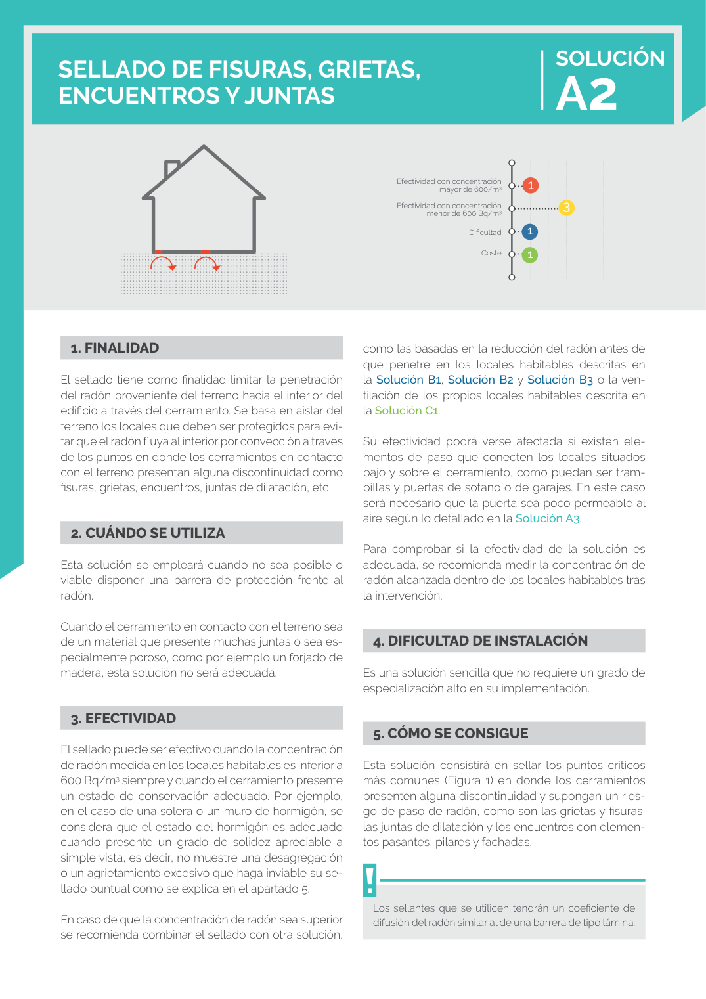

Guia de rehabilitacion frente al radon Fichas · edición sin-fecha · capa guia
Documento GUIA-PDF-f3314b0414fe · SHA-256 del PDF e58e54b822cf4ab00e258f0eb50c0f06a8c04e3730a7f530d224485e2a5bb02e
Página física 35 de 82.
Copia fiel del PDF fuente · Fuente oficial
Ficha de la disposición en la fuente oficial
Créditos y autoría en el PDF fuente. Reproducción con cita de fuente y autores.
Permiso literal: Se permite la reproducción total o parcial del contenido de este nible en el momento de su publicación. No se aceptará por las institu documento siempre y cuando se cite la fuente original
Este documento ha sido elaborado por el Instituto de ciencias
de la construcción Eduardo Torroja (IETcc) bajo la supervisión
de la Dirección General de Agenda Urbana y Arquitectura del
Ministerio de Transportes, Movilidad y Agenda Urbana (MITMA).
El IETcc, perteneciente al Consejo Superior de Investigaciones
Científicas (CSIC), es el centro de investigación en edificación
de referencia en España. La Unidad de Calidad en la Construc
ción del IETcc asesora al MITMA en la elaboración del Código
Técnico de la Edificación que, desde el año 2019, cuenta con la
sección HS6 Protección frente a la exposición al radón.
Dirección y Coordinación:
Ministerio de Transportes, Movilidad y Agenda Urbana
Isabel Marcos Anasagasti
Raquel Lara Campos
Eduardo González de Prado
Instituto de ciencias de la construcción Eduardo Torroja CSIC
Pilar Linares Alemparte
Autoras:
Pilar Linares Alemparte
Sonia García Ortega
Colaboradoras:
Virginia Sánchez Ramos
Karina Angélica García Pardo
Edita:
Centro de Publicaciones Secretaría General Técnica
Ministerio de Transportes, Movilidad y Agenda Urbana©
Entidad colaboradora:
Consejo Superior de Investigaciones Científicas · CSIC
Ministerio de Ciencia e Innovación
Catálogo de publicaciones de la Administración General
del Estado: publicacionesoficiales.boe.es
Centro virtual de publicaciones del Ministerio de Transpor
tes, Movilidad y Agenda Urbana: www.mitma.gob.es
Página web del Código Técnico de la Edificación:
SECRETARÍA GENERAL DE www.codigotecnico.org AGENDA URBANA Y VIVIENDA MINISTERIO GOBIERNO DE TRANSPORTES, MOVILIDAD DE ESPAÑA Y AGENDA URBANA DIRECCIÓN GENERAL DE
Maquetación y diseño gráfico: AGENDA URBANAY ARQUITECTURA
Lapizmente. Estrategia • Diseño Gráfico
CIENCIAFotografía portada: GOBIERNODE ESPAÑA MINISTERIODEE INNOVACIÓN
Sonia García Ortega
Los contenidos o ideas recogidas en este documento pertenecen a
sus autores. Este documento está basado en el conocimiento dispo Se permite la reproducción total o parcial del contenido de este
nible en el momento de su publicación. No se aceptará por las institu documento siempre y cuando se cite la fuente original y a sus
ciones ni los autores implicados responsabilidad de ningún tipo por el autores.
uso de estas recomendaciones. Las figuras tienen carácter ilustrativo
y no deben interpretarse como detalles constructivos.Formato: Texto de la página (Markdown)
Efectividad con concentración mayor de 600/m3 Efectividad con concentración menor de 600 Bq/m3 Dificultad Coste 1 3 1 1 SELLADO DE FISURAS, GRIETAS, ENCUENTROS Y JUNTAS SOLUCIÓN A2 como las basadas en la reducción del radón antes de que penetre en los locales habitables descritas en la Solución B1, Solución B2 y Solución B3 o la ven tilación de los propios locales habitables descrita en la Solución C1. Su efectividad podrá verse afectada si existen ele mentos de paso que conecten los locales situados bajo y sobre el cerramiento, como puedan ser tram pillas y puertas de sótano o de garajes. En este caso será necesario que la puerta sea poco permeable al aire según lo detallado en la Solución A3. Para comprobar si la efectividad de la solución es adecuada, se recomienda medir la concentración de radón alcanzada dentro de los locales habitables tras la intervención. 4. DIFICULTAD DE INSTALACIÓN Es una solución sencilla que no requiere un grado de especialización alto en su implementación. 5. CÓMO SE CONSIGUE Esta solución consistirá en sellar los puntos críticos más comunes (Figura 1) en donde los cerramientos presenten alguna discontinuidad y supongan un ries go de paso de radón, como son las grietas y fisuras, las juntas de dilatación y los encuentros con elemen tos pasantes, pilares y fachadas. 1. FINALIDAD El sellado tiene como finalidad limitar la penetración del radón proveniente del terreno hacia el interior del edificio a través del cerramiento. Se basa en aislar del terreno los locales que deben ser protegidos para evi tar que el radón fluya al interior por convección a través de los puntos en donde los cerramientos en contacto con el terreno presentan alguna discontinuidad como fisuras, grietas, encuentros, juntas de dilatación, etc. 2. CUÁNDO SE UTILIZA Esta solución se empleará cuando no sea posible o viable disponer una barrera de protección frente al radón. Cuando el cerramiento en contacto con el terreno sea de un material que presente muchas juntas o sea es pecialmente poroso, como por ejemplo un forjado de madera, esta solución no será adecuada. 3. EFECTIVIDAD El sellado puede ser efectivo cuando la concentración de radón medida en los locales habitables es inferior a 600 Bq/m3 siempre y cuando el cerramiento presente un estado de conservación adecuado. Por ejemplo, en el caso de una solera o un muro de hormigón, se considera que el estado del hormigón es adecuado cuando presente un grado de solidez apreciable a simple vista, es decir, no muestre una desagregación o un agrietamiento excesivo que haga inviable su se llado puntual como se explica en el apartado 5. En caso de que la concentración de radón sea superior se recomienda combinar el sellado con otra solución, Los sellantes que se utilicen tendrán un coeficiente de difusión del radón similar al de una barrera de tipo lámina.
